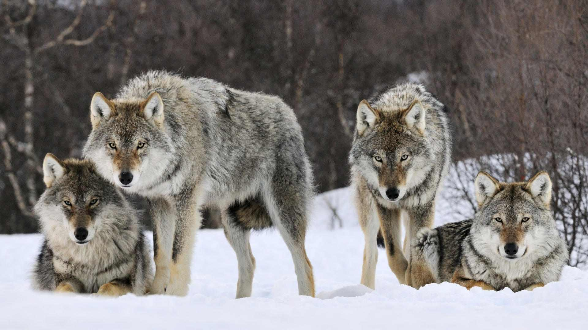

Contrary to popular belief, being a predator in the natural world is not easy at all. In fact, predators fail more times than they succeed. Even though they are the top of the food chain, predators must work hard just to have their next meal. For example, this cheetah appears to be easily tracking this impala, but a cheetah succeeds only five out of 10 tries. However, some predators are more effective than others. Here is a list of 10 of the most efficient predators.
| Based on observations made in Kanha National Park in India, US field biologist George Schaller estimated tigers were successful only 5% of the time, while tiger conservationist Valmik Thapar estimates 10%. But studies of Amur tigers in Russia’s Far East, reconstructing predation events from tracks in the snow, give kill rates of a 38% when hunting red deer to 54% for wild boar. |
Polar bears mainly hunt either by ambushing seals in their snow lairs or when they come up to their breathing holes, or by stalking seals on sea ice – in both cases, research has shown that their odds of success are 10%. On very rare occasions, some individuals have been observed successfully hunting reindeer and – elsewhere – killing beluga whales that must surface through a small hole in the ice in order to breathe. Here is a link to watch a polar bear hunting a seal. Polar bear stalking seal
| In 14 separate studies of gray wolf hunts, the average kill rate for this species was 14%, but there is much variation within this. Wolves hunting moose on Isle Royale (in Lake Superior in the US) were found to be successful just 6% of the time, while wolves chasing white-tailed deer in Minnesota made a kill about 20% of the time.> |  |
The hunting success rate of lions is strongly dependent on the number involved – a single lion hunting in daylight has a success rate of 17-19%, but this increases for those hunting as a group to 30%. Of 1,300 hunts observed in the Serengeti, nearly half involved only one animal, 20% involved two and the rest a group of usually between three and eight individuals.
A recent study of feral domestic cats, carried out by scientists in northern Australia, found they were made a kill in 32 out of 101 hunting attempts – a success rate of 325. This kill rate soared when they were hunting in open habitat to 70%. However, only 28% of kills were actually eaten.
Studies carried out on leopards have revealed wide-ranging success rates, varying from 38% for individuals in north-east Namibia to 14% in the Kalahari. A female with cubs has been shown to have a kill rate of 28%, while a lone male can only achieve one of 14%!
Scientists observing peregrine falcons predating dunlin in Washington State in the USA recorded a success rate of 47% with “perch-to-perch” hunting flights that involved one or more capture attempts. Stoops, the hungting style for which this bird is famous, is where the falcons drop from a height of about 50-80m, but in some cases up to 1,000m. This style of hunting flight was used in 65% of flights.
| A study from the Serengeti in 2012 observed 192 cheetah pursuits, of which 114 ended in a kill – a success rate of 58%. In order to stop larger carnivores from stealing their hard-earned meals, they move them to more secluded, shadier spots - even so, research suggests they are ousted 10% of the time. Included here is another gif of a cheetah running because it looks cool. |
Black-footed cats are astonishingly active and successful nocturnal hunters – one scientist’s observations show they make a hunting attempt every 30 minutes, and are successful 60% of the time. They eat a wide variety of prey, from gerbils and shrews to small birds and insects, and make 10-14 kills every night. The following link is a website about cat conservation that gives some information about these predators. Black-Footed Cat
| The lean frames and endearingly large ears of African wild dogs are deceptive – they are one of the most successful predators anywhere, with a kill rate per chase of more than 85%. | That’s not the whole story, however – they may lose half of their kills, ranging from small impalas to wildebeest 10 times their weight, to other carnivores such as hyenas and lions. |